Azure Cloud Infrastructure Lab
Ein strukturiertes Azure-Lab, das Production und Testing trennt und Netzwerkdesign, Windows/Linux Compute, sichere Administration, VNet Peering, Monitoring und Managed Storage mit praktischer Verifikation in jeder Phase verbindet.
Eine kleine Cloud-Infrastruktur mit mehreren Umgebungen.
Das Lab wurde so aufgebaut, dass es über das reine Erstellen einzelner Azure-Ressourcen hinausgeht. Production und Testing wurden als getrennte Umgebungen aufgebaut und anschließend über Networking, virtuelle Maschinen, sichere Administration, Monitoring und Storage miteinander verbunden, sodass jede Komponente praktisch konfiguriert und validiert werden konnte.

Klare Trennung von Production und Testing
Für Production und Testing wurden getrennte Resource Groups erstellt. Dadurch erhielt jede Umgebung eine klare organisatorische Grenze und die zugehörigen Ressourcen ließen sich leichter zuordnen und verwalten.
Ziel dieses Schritts war nicht nur eine andere Benennung der Ressourcen, sondern eine saubere Struktur, bevor Networking-, Compute- und Monitoring-Komponenten hinzugefügt wurden.
- Separate Resource Groups für Production und Testing erstellt.
- Umgebungsspezifische Ressourcen der passenden Grenze zugeordnet.
Ressourcenstruktur ansehen
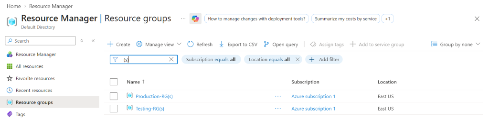
VNet-Planung, CIDR und Subnetz-Segmentierung
Die Production-Umgebung verwendet den Address Space 10.0.0.0/16. Darin trennen zwei Subnetze die Workloads: Fin App → 10.0.0.0/24 und Web App → 10.0.1.0/26.
Ein zweites Testing VNet verwendet 192.168.0.0/24. Die Trennung von Testing in einem eigenen virtuellen Netzwerk ermöglichte sowohl Isolation als auch die spätere Cross-Network-Kommunikation über Peering.
Dieser Teil des Labs bot praktische Erfahrung mit CIDR-Adressierung, Address-Space-Planung und Subnetz-Segmentierung, statt VNet-Erstellung als reine One-Click-Aufgabe zu behandeln.
Production VNet & Subnetze ansehen
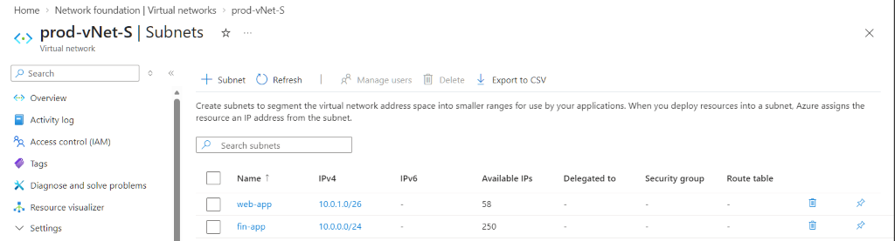
Testing VNet ansehen
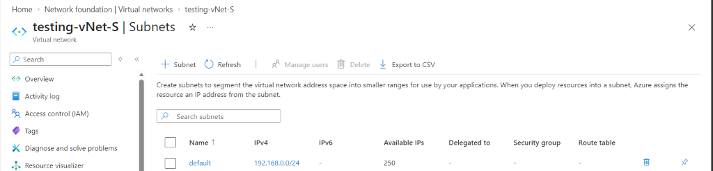
Gemischte Windows- und Linux-Workloads
Die Production-Umgebung enthält eine Windows Server 2025 Datacenter VM und eine Rocky Linux 9 VM. In Testing wurde zusätzlich eine separate Rocky Linux 9 VM deployed.
Dadurch entstand ein kleines Multi-Environment-Setup, in dem sowohl Windows- als auch Linux-Administration praktisch geübt und später die Konnektivität zwischen Hosts in unterschiedlichen virtuellen Netzwerken getestet werden konnte.
- Windows Server 2025 Datacenter in Production.
- Rocky Linux 9 in Production.
- Rocky Linux 9 in Testing.
VM-Deployment ansehen
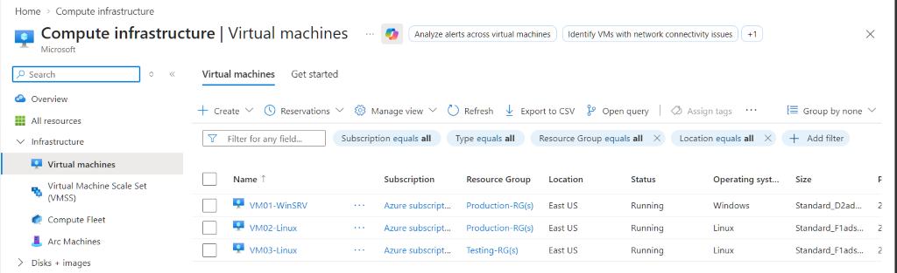
RDP für Windows, SSH Keys für Linux
Die Windows-Server-VM wurde über Remote Desktop Protocol administriert. Auf die Rocky-Linux-Systeme wurde per SSH mit Key-basierter Authentifizierung zugegriffen.
Durch den jeweils passenden Zugriff wurde Remote-Administration selbst Teil des Labs. Besonders die SSH-Key-Authentifizierung bot praktische Erfahrung mit dem in Cloud-Umgebungen üblichen Zugriffsmodell für Linux-Server.
- Funktionierende RDP-Session zum Windows Server hergestellt.
- Verbindung zu Rocky Linux per SSH-Key-Authentifizierung hergestellt.
SSH-/RDP-Zugriff ansehen
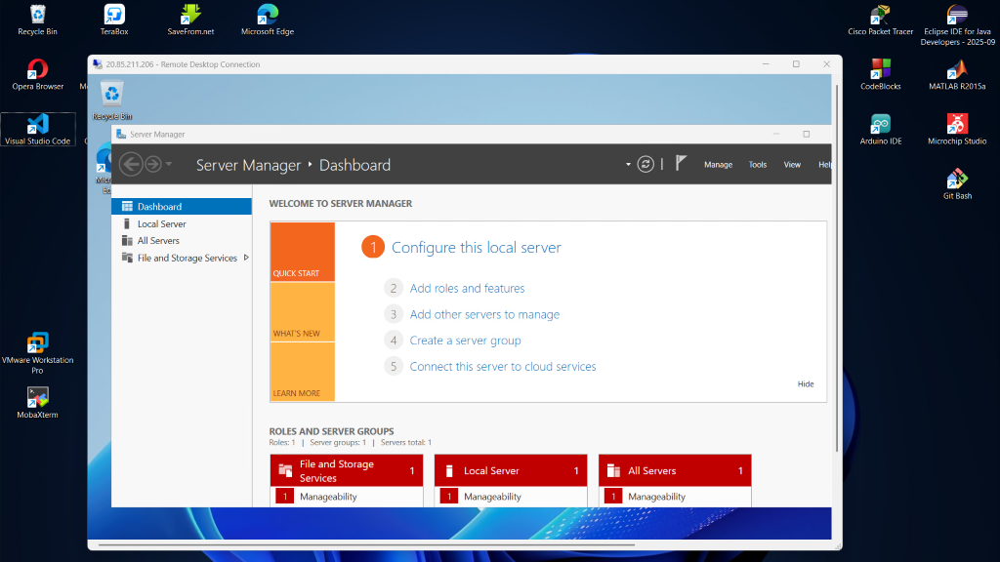
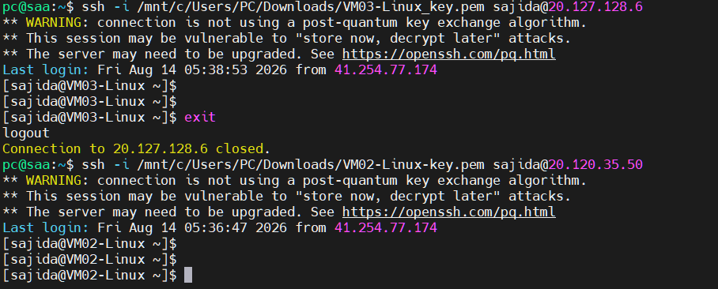
Getrennte Umgebungen gezielt verbinden
Zwischen Production und Testing wurde VNet Peering eingerichtet. Ziel war es, Kommunikation zwischen den getrennten VNets zu ermöglichen und gleichzeitig die logische Trennung der Umgebungen auf Netzwerkebene beizubehalten.
Die Konfiguration wurde anschließend mit einem echten Connectivity-Test validiert. Der erfolgreiche Test bestätigte, dass das Peering tatsächlich funktionierte und nicht nur im Azure Portal konfiguriert war.
- VNet Peering zwischen Production und Testing konfiguriert.
- Konnektivität zwischen den gepeerten Netzwerken getestet.
- Erfolgreiche Kommunikation bestätigt.
VNet-Konnektivitätstest ansehen
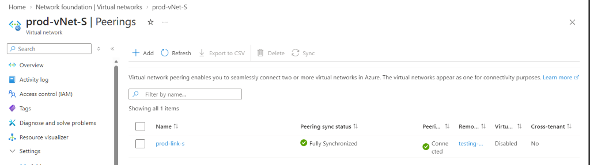
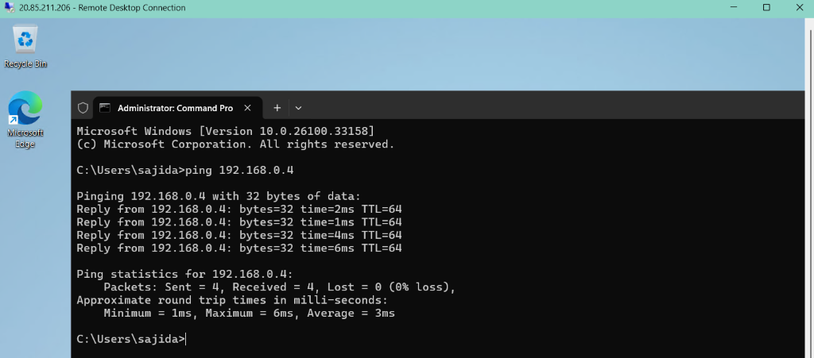
Infrastruktur nach dem Deployment überwachen
Azure Monitor wurde zur Überwachung der VM-CPU-Auslastung konfiguriert. Für die CPU-Alert-Rule wurde ein Schwellenwert von 0.2% verwendet. Zusätzlich wurde eine Azure Action Group eingerichtet, die beim Auslösen der Alert-Bedingung eine E-Mail sendet.
Entscheidend war die End-to-End-Verifikation: Der Alert wurde nicht nur konfiguriert, sondern in Azure Monitor geprüft und durch die tatsächlich empfangene E-Mail-Benachrichtigung bestätigt. Damit wurde aus der Konfiguration ein nachvollziehbarer Beleg dafür, dass die komplette Notification Chain funktionierte.
- CPU-Auslastungs-Alert erstellt.
- Azure Action Group konfiguriert.
- Alert ausgelöst bzw. verifiziert.
- Benachrichtigungs-E-Mail erfolgreich empfangen.
Monitoring- & E-Mail-Verifikation ansehen
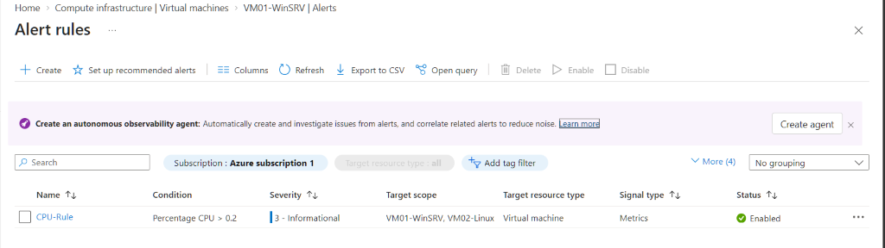
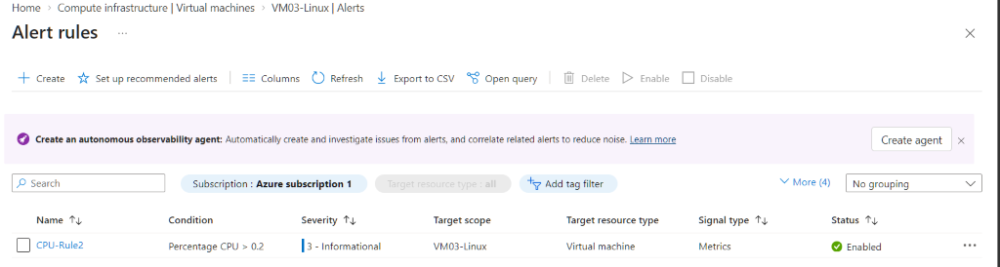
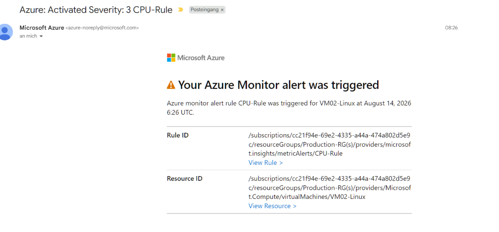
Managed Shared Storage, von einem Client getestet
Ein Azure Storage Account wurde mit einem Azure File Share eingerichtet. Dadurch wurde Managed Cloud Storage als eigenständige Infrastrukturkomponente genutzt, statt Daten ausschließlich an eine VM zu binden.
Der File Share wurde zusätzlich lokal eingebunden. Damit konnte der Zugriff praktisch getestet und gezeigt werden, wie cloudbasierter Shared Storage außerhalb des Azure Portals genutzt werden kann.
- Azure Storage Account erstellt.
- Azure File Share erstellt.
- File Share lokal eingebunden und Zugriff getestet.
Storage-Konfiguration & lokalen Mount ansehen
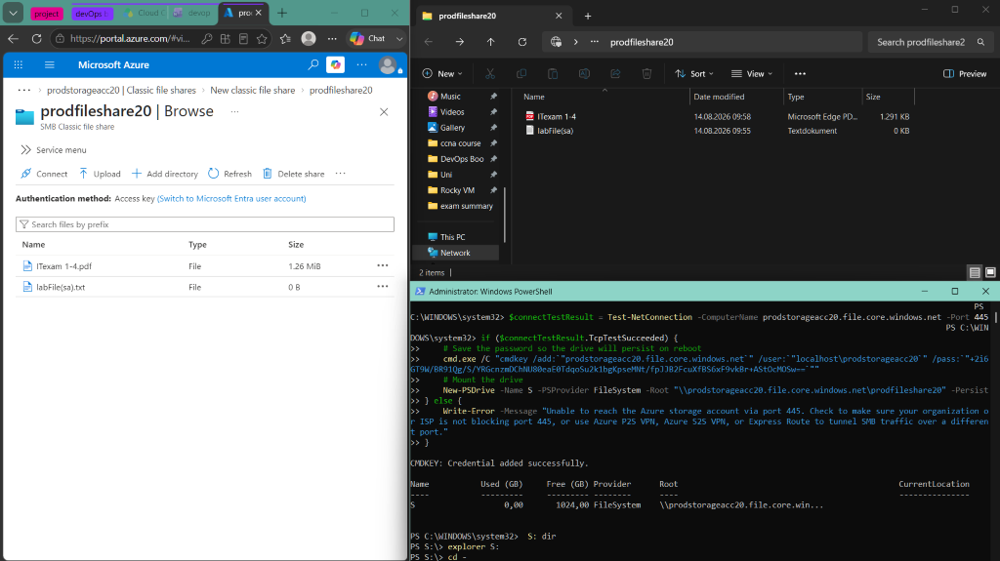
Infrastruktur wird dann wertvoll, wenn ihre Komponenten gemeinsam getestet werden.
Das Projekt verband Netzwerkdesign, Compute, sicheren Zugriff, Monitoring und Storage in einer gemeinsamen Umgebung. Noch wichtiger war, dass jeder Bereich praktisch validiert wurde — von SSH/RDP-Zugriff und Cross-VNet-Konnektivität bis zu Alert-Benachrichtigungen und eingebundenem Storage. Genau so möchte ich DevOps angehen: aufbauen, testen, untersuchen und verstehen, warum etwas funktioniert.